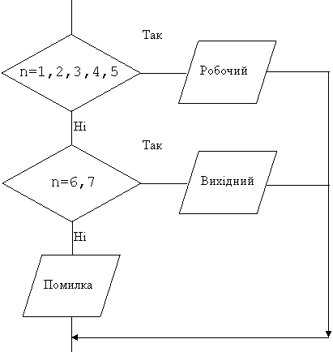

Назад
Зміст
Вперед
Оператор вибору case
Оператор вибору використовується замість декількох неповних операторів.
| Загальний вигляд | Приклад |
|---|
Case n of
b1: s1;
b2: s2;
…
else s;
end; | case n of
1..5:writeln(' робочий ');
6,7 :writeln(' вихідний ');
else writeln('error');
end; |
n – змінна вибору.
b1, b2... – стала вибору, список сталих вибору (у прикладі 6, 7) або діапазон сталих вибору (у прикладі 1..5, тобто 1, 2, 3, 4, 5).
s1, s2,... s – оператори. У прикладі writeln('робочий'); writeln('вихідний'); writeln('error');
Написана вище конструкція у прикладі на блок-схемі відображається так:

Зауваження до оператору case
- Оператор працює так: значення змінної вибору n порівнюється з сталими вибору b1, b2.... Якщо значення змінної та сталої співпадають, то виконується відповідний оператор s1, s2,..., якщо ні, то виконується оператор s, що стоїть після else. У прикладі: якщо 1<=n<=5, то виконується оператор writeln('робочий'), якщо n=6 або n=7, то виконується оператор writeln('вихідний'), якщо n<1 або n>7, то виконується оператор writeln('error').
- Змінна вибору повинна мати цілий або символьний тип.
- Тип змінної вибору та сталої вибору повинні співпадати.
- Наприкінці оператору case повинен стояти end.
- Частина після else не обов’язкова.
- Якщо потрібно виконати декілька операторів, то вони беруться у операторні дужки.
- Якщо значення змінної вибору співпадає з декількома сталими, то виконується тільки той оператор, що відповідає сталій, яка розташована раніше.
Приклад
Дано номер дня у тижні (1—7). Надрукувати робочий це день, вихідний чи введене число не є порядковим днем тижня..
Дано: натуральне число.
Знайти: робочий це день (1-5), вихідний (6, 7), чи це помилка (у інших випадках).
Змінні:
Вхідні:
- n – число типу byte (бо введене число додатне та ціле)
Алгоритм
- Ввід числа n, це буде змінна вибору.
- Перевіряємо значення цієї змінної:
- Потрібно надрукувати слово 'робочий', якщо 1<=n<=5, тобто маємо діапазон сталих “1..5”.
- Потрібно надрукувати слово 'вихідний', якщо n=6, або n=7, тобто маємо список сталих “6,7”.
- у інших випадках потрібно надрукувати слово 'помилка'
Програма
var n:byte;
begin
read(n);
case n of
1..5:writeln('робочий');
6,7 :writeln('вихідний');
else writeln('помилка');
end;
end.
|
Приклади результатів роботи програми
| Ввід | Вивід |
|---|
| 5 | робочий |
| 7 | вихідний |
| 9 | помилка |
Назад
Зміст
Вперед